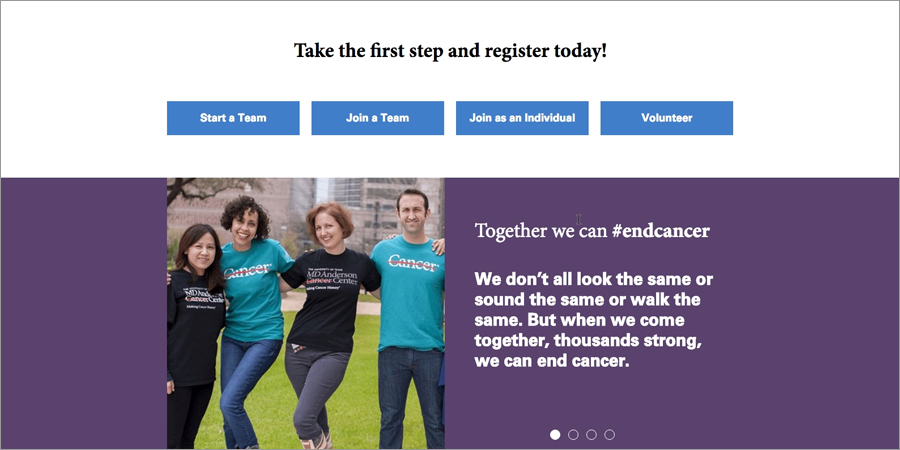
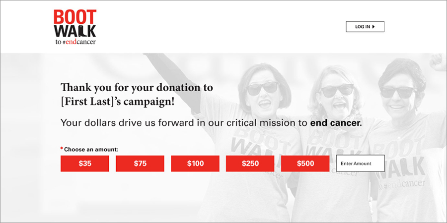
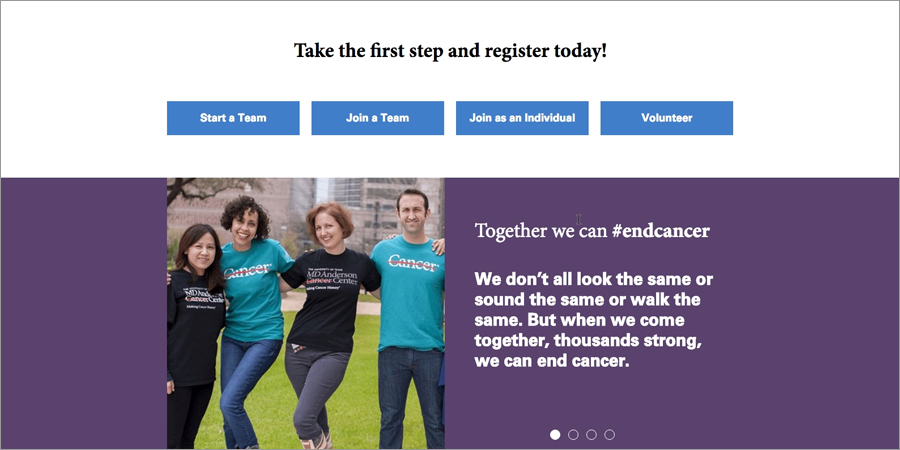
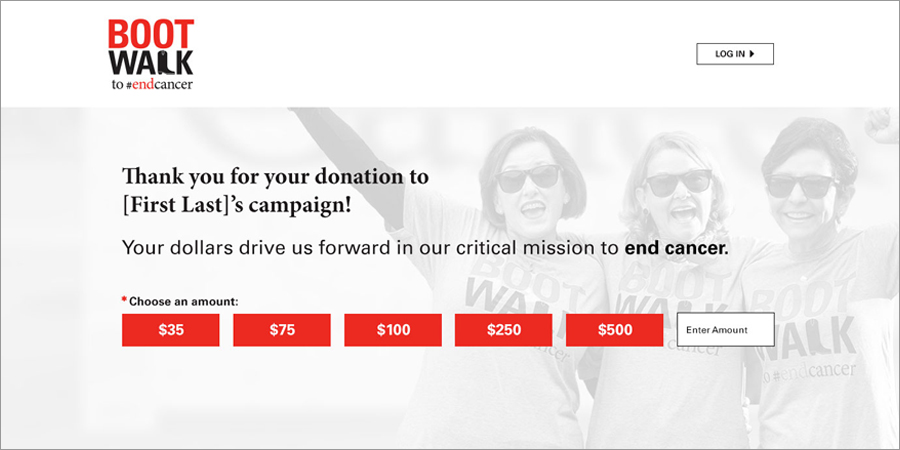

The University of Texas MD Anderson Cancer Center launched their new walk event, Boot Walk to End Cancer, in May. This new walk is a community initiative where all proceeds from the event will benefit research and patient programs at MD Anderson, home to the nation's top-ranked hospital for cancer care.
New to the Blackbaud platform, MD Anderson needed a full site designed specifically for Blackbaud's TeamRaiser module, including a customized participant center.
 


